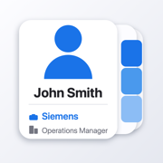

WhoWorksWhoWorks for iPhone
Email swallace23@gmail.com and I'll get back to you.
WhoWorks needs permission to read your contacts. Open Settings › Privacy & Security › Contacts › WhoWorks and turn it on. Choosing "Limited Access" will only show the handful of contacts you picked.
Pinch outward on the list with two fingers. Each step shows one more line. The same four levels are in the "AA" menu at the top right if you'd rather tap.
Those contacts have no Company field and no work email address to work it out from. WhoWorks never invents one — if there's nothing to show, the line is left out.
Companies shown in lighter grey were guessed from an email domain, which gets it wrong for freelancers and anyone using a client's address. Nothing is ever written back to your contacts. To fix it permanently, fill in the Company field on the contact card.
Not on its own. WhoWorks only reads them. Tapping a contact opens Apple's standard card, and if you edit there, iOS saves it exactly as it would from the Contacts app.